1. Five years of scores
National averages, grade bands and category trends across the five releases.
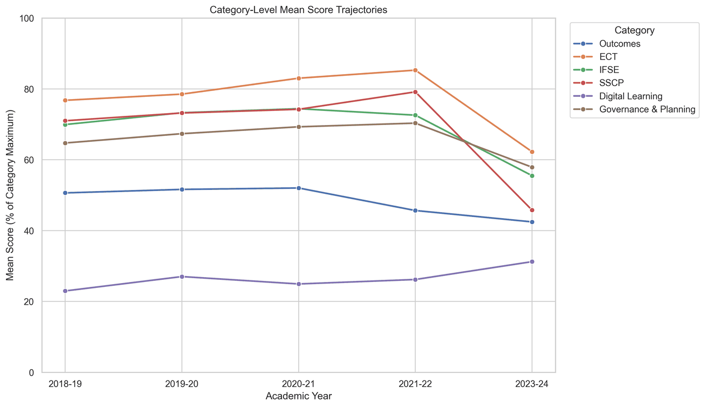
Scores climbed until 2020-21, then fell sharply in 2023-24
The national mean rose from 57.0% (341.9 of 600 points) in 2018-19 to 60.0% in 2020-21, slipped to 57.7% in 2021-22 and dropped to 48.0% (287.8 points) in 2023-24.
Digital Learning is the weakest category in every year, between 23% and 31% of its maximum. It is also the only category that rose in 2023-24, when every other category fell.
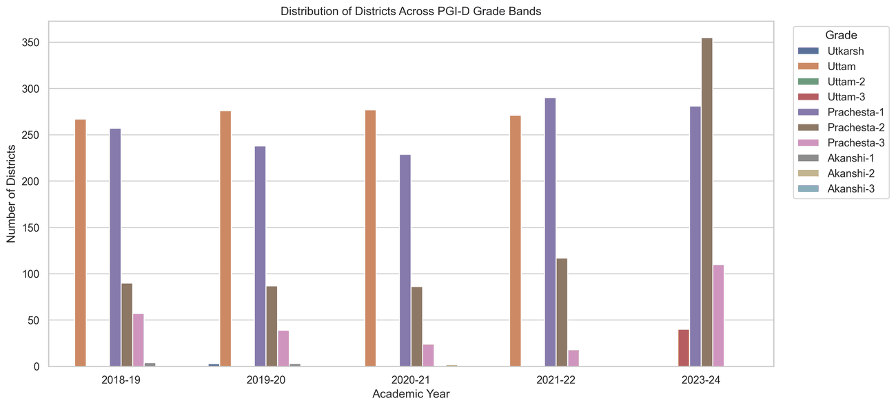
The grade distribution shifted down a full band
In 2018-19, 36.8% of districts were graded Uttam and a further 6.8% Ati-Uttam. In 2023-24 only 41 districts held an Uttam grade (40 in Uttam-3, one in Uttam-2) and none were Ati-Uttam.
Prachesta-2 (40 to 50%) became the most common grade in 2023-24, with 355 districts (45.1%).
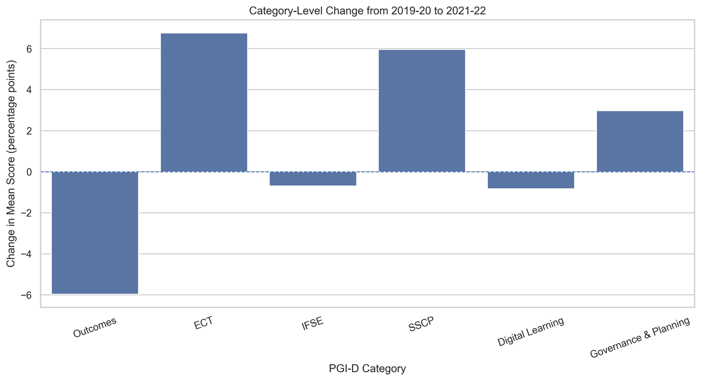
COVID hit learning, not paperwork
Over the COVID window, Outcomes fell by 6.0 points, the largest drop of any category. Outcomes is the category built on student assessment (the National Achievement Survey of 2021), so this is the most direct trace of learning loss in the data.
Meanwhile ECT (+6.8), SS&CP (+6.0) and GP (+3.0) rose. These are built from administrative and process indicators, which districts could keep reporting while classrooms were closed.
The 2021-22 to 2023-24 drop has the opposite shape: almost every category fell at once, SS&CP by 33.4 points and ECT by 23.0, while only DL rose (+5.0).
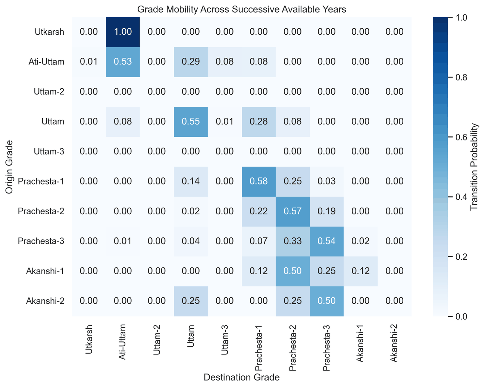
Most districts keep their grade
The diagonal dominates: 58% of Prachesta-1 districts are still Prachesta-1 in the next release, and Uttam (55%), Prachesta-2 (57%) and Prachesta-3 (54%) are similar. Most of the remaining moves are to a neighbouring grade; jumps of two or more grades are uncommon.
2. What separates districts
Dimensionality reduction and clustering on the six category scores of 2023-24 (788 districts).
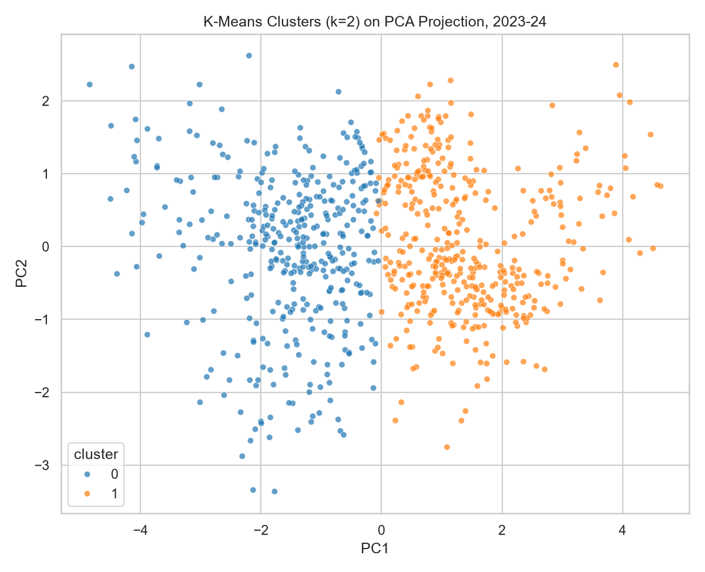
Two kinds of district, split by safety and digital learning
The first principal component explains 52.8% of the variance and loads on ECT, SS&CP and DL together, so it works as a general capacity axis. The second (17.2%) is almost entirely GP.
K-Means finds two clusters (the silhouette score peaks at k = 2, 0.309). They differ most on SS&CP and DL, not on learning Outcomes:
| Cluster | OC | ECT | IF&SE | SS&CP | DL | GP | Districts |
|---|---|---|---|---|---|---|---|
| Weaker | 39.3 | 52.9 | 48.7 | 31.5 | 18.5 | 55.6 | 381 |
| Stronger | 45.4 | 71.0 | 61.9 | 59.1 | 43.1 | 60.0 | 407 |
| Gap | 6.1 | 18.1 | 13.2 | 27.6 | 24.6 | 4.4 |
Mean score as % of category maximum, 2023-24.
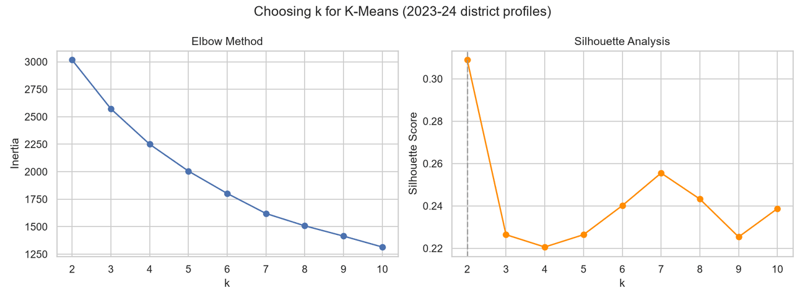
Why two clusters
The inertia curve falls smoothly with no clear elbow, so we chose k by silhouette score. It is highest at k = 2 (0.309) and stays at 0.26 or below for every k from 3 to 10.
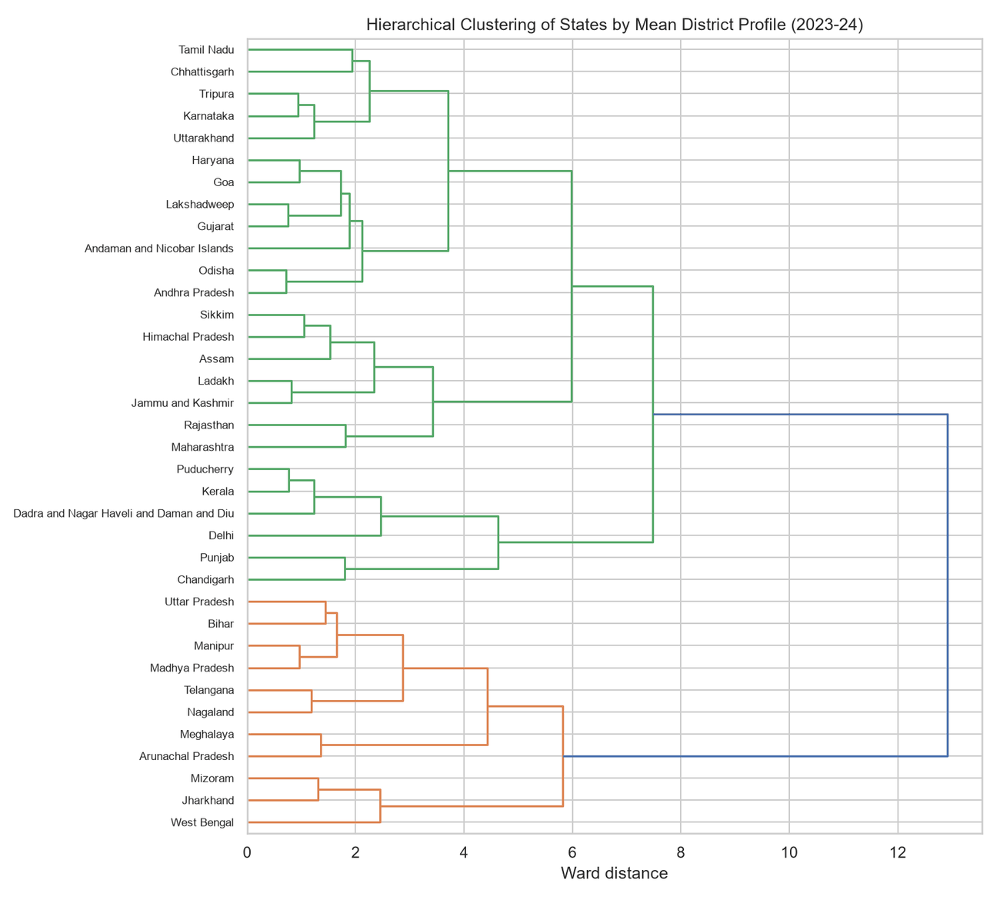
The split holds at state level too
Clustering states by their average district profile and cutting the tree into two groups agrees with the K-Means majority label of each state's districts (adjusted Rand index 0.888). The two-group structure is not an artefact of one method.
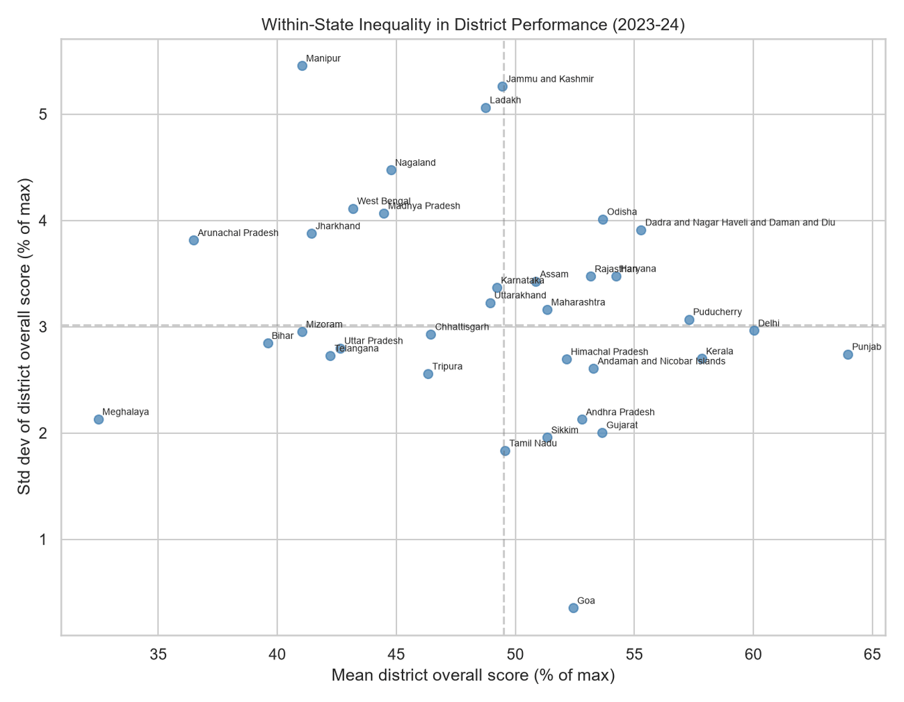
A state average can hide weak districts
State means range from 32.5% (Meghalaya) to 64.0% (Punjab). States in the high-mean, low-spread corner are strong everywhere. States with a high mean and a wide spread have strong districts next to weak ones, which a state-level average would hide.
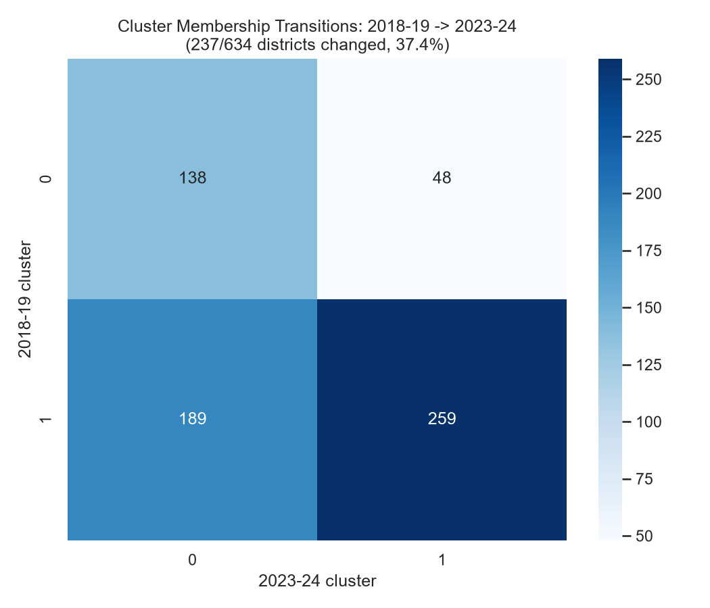
A third of districts changed cluster
237 of 634 districts (37.4%) changed cluster between 2018-19 and 2023-24: 189 moved from cluster 1 to cluster 0 and 48 from cluster 0 to cluster 1. The cluster structure is real, but membership is far from fixed over five years.
Clusters are fitted separately for each year and matched by their centres, so a move means a district changed position relative to its peers.
3. Predicting grades and scores
Models trained on 2018-19 to 2021-22 (2,927 district-years) and tested on 2023-24 (788 districts), so the test year is genuinely unseen.
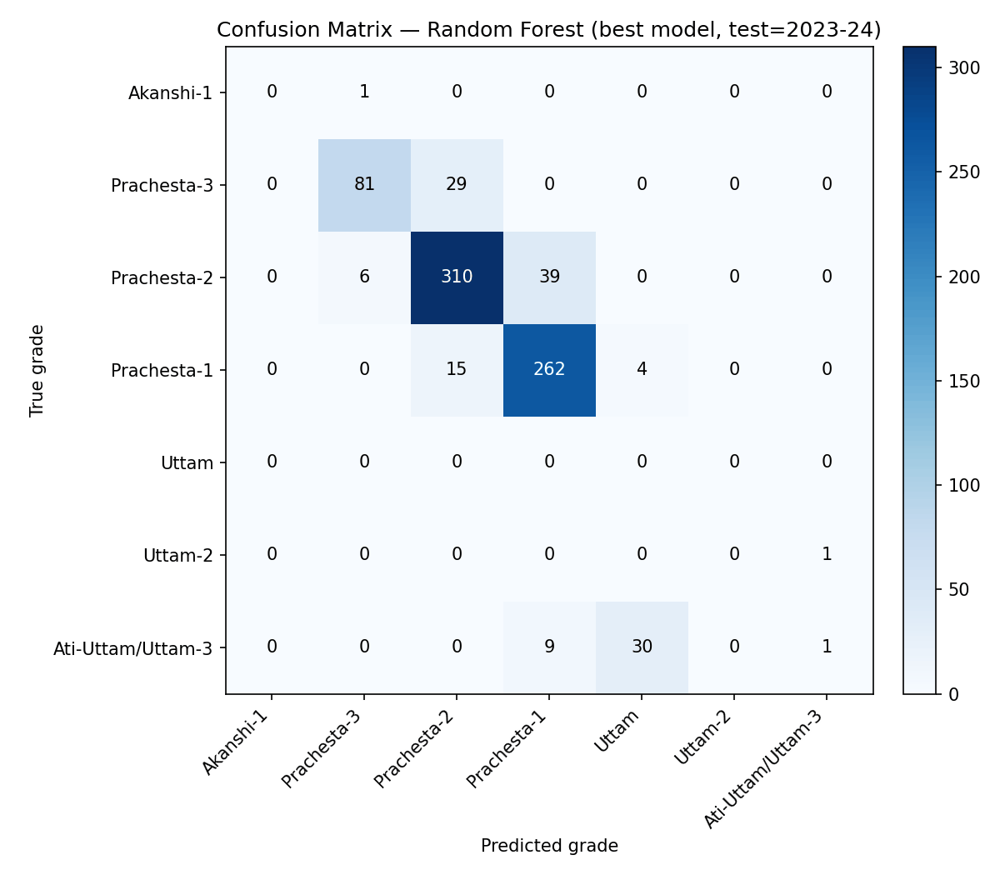
Grades can be predicted with 83% accuracy
| Model | Test accuracy |
|---|---|
| Decision Tree (depth 6) | 72.1% |
| Gradient Boosting | 82.5% |
| Random Forest (300 trees, depth 8) | 83.0% |
Random Forest is best. It is strongest on the two largest grades: Prachesta-1 (precision 0.85, recall 0.93) and Prachesta-2 (0.88, 0.87). Grades held by only one district in the test year cannot be learned.
A single tree overfits the rare grades; averaging 300 shallow trees removes most of that variance.
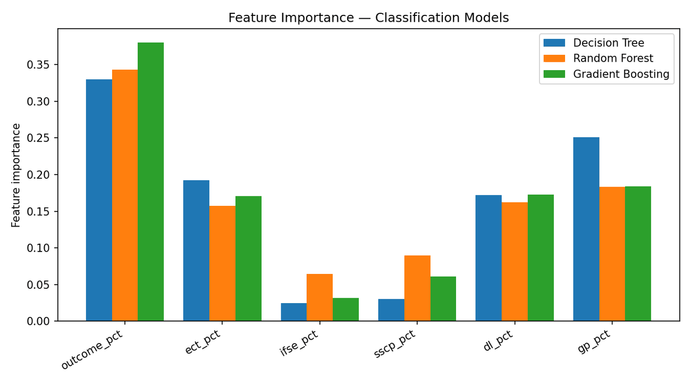
Outcomes and GP decide the grade
Outcomes and GP carry the most weight in predicting grade, with ECT and DL close behind. SS&CP and IF&SE matter least, even though SS&CP is what separates the two clusters. Outcomes alone is worth 290 of the 600 points, so this is expected.
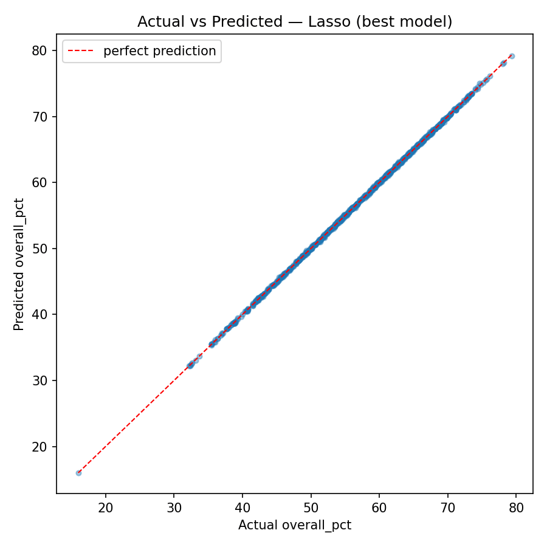
The overall score is a sum, and the models confirm it
Linear, Ridge and Lasso regression all reach R² = 0.9999 (mean absolute error 0.07 points) when predicting the overall score from the six categories. That is a sanity check rather than a finding: the overall score is the sum of the categories. Random Forest does slightly worse (R² = 0.988) because trees cannot reproduce an exact sum.
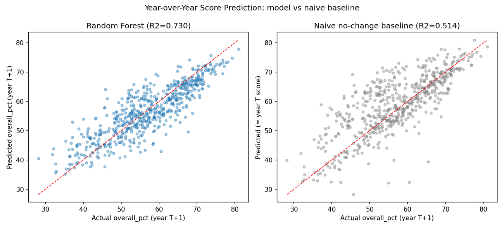
This year's profile predicts next year's score
On 2,853 pairs of consecutive releases, a Random Forest given this year's six category scores predicts next year's overall score with R² = 0.730 (mean error 4.2 points). Assuming the score stays the same gives only R² = 0.514 (5.2 points). The category profile carries real information about where a district is heading.
4. Patterns and anomalies
Correlations between categories, association rules, how stable the rankings are, and which districts moved unusually far.
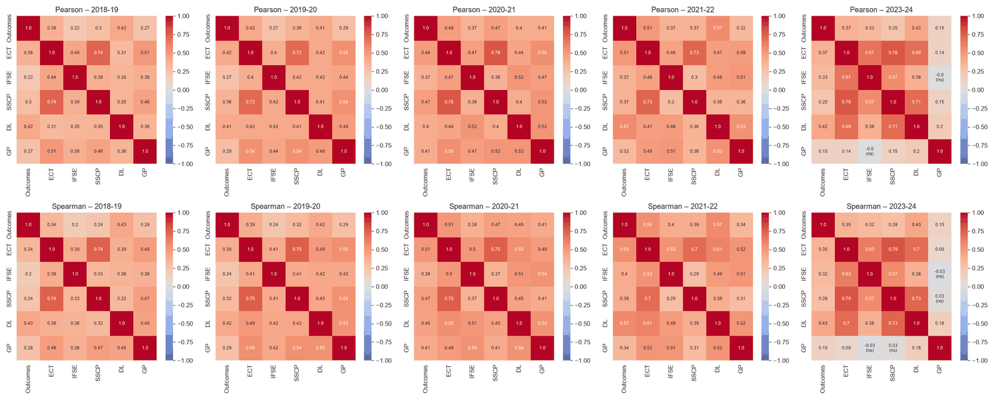
ECT and SS&CP move together
ECT and SS&CP are the most tightly linked pair (r = 0.80 pooled over all years). 14 of the 15 category pairs are significantly correlated in every year; the exception is IF&SE with GP in 2023-24. Outcomes is the most independent category, with the weakest links to the infrastructure and governance indicators.
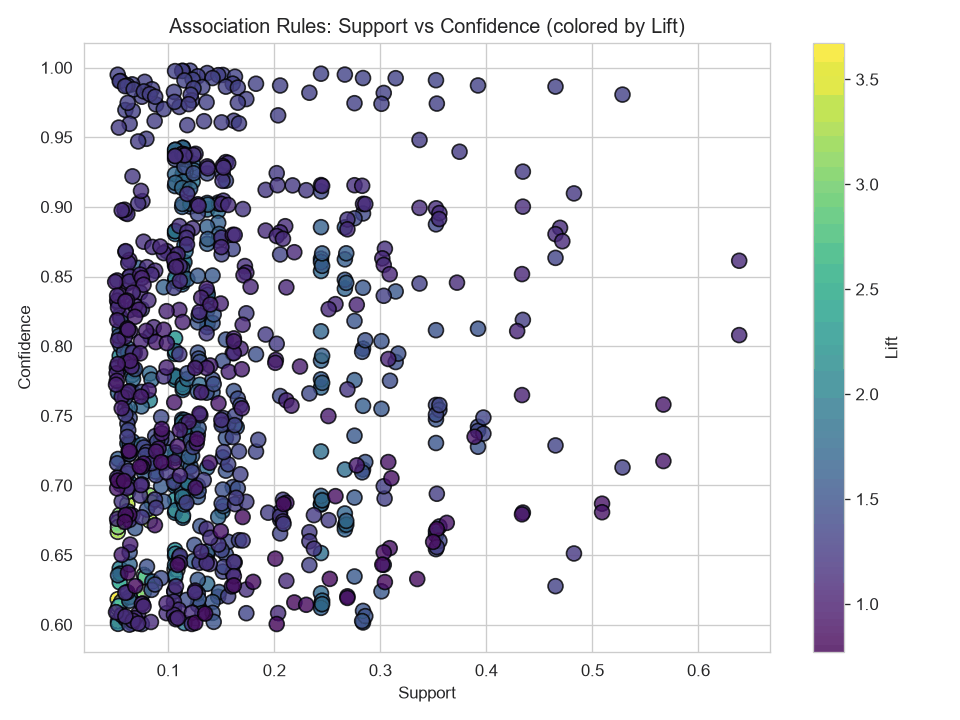
Weaknesses come in bundles
Each category score was turned into a tier (Low below 40%, Medium, High above 70%) and mined with Apriori (minimum support 0.05, confidence 0.6). The strongest rules by lift:
- ECT Medium + Outcomes Low → DL Low + SS&CP Low
61% of the time, 3.7 times more often than chance - ECT Medium + Outcomes Low → SS&CP Low
61% of the time, lift 3.6 - IF&SE Medium + SS&CP Low → DL Low + ECT Medium
68% of the time, lift 3.3, in 8.3% of all district-years
A district weak in SS&CP is usually weak in DL as well, and the pair goes with low Outcomes.
Rankings are stable, but less so every year
Spearman correlation of district rankings between consecutive releases, for the 643 districts present in all five:
| Between | ρ |
|---|---|
| 2018-19 and 2019-20 | 0.924 |
| 2019-20 and 2020-21 | 0.885 |
| 2020-21 and 2021-22 | 0.855 |
| 2021-22 and 2023-24 | 0.760 |
All four are significant. The ordering of districts is durable, but it loosens with every release, most of all across the two-year gap to 2023-24.
SS&CP is behind the most sudden swings
We flagged a move as unusual when a district's change differed from the national change by more than 1.5 standard deviations: 292 of 2,948 moves (9.9%). For each, the "driver" is the category that changed most.
| Driver | Up | Down | Total* |
|---|---|---|---|
| SS&CP | 48 | 63 | 115 |
| GP | 38 | 16 | 54 |
| ECT | 35 | 12 | 47 |
| Outcomes | 6 | 24 | 30 |
| IF&SE | 13 | 14 | 28 |
| DL | 8 | 9 | 18 |
* Includes 6 districts whose score did not change at all from 2021-22 to 2023-24. They count as unusual because nearly every other district fell by about 10 points.
DL is the weakest category on average but the least common driver: its problem is a low floor everywhere, not volatility.
Anomalies, observations and patterns
- Anomaly: the 2023-24 drop is broad and steep across nearly every category at once (SS&CP down 33 points in two years) and arrives with a new 10-tier grade scale. That looks more like a change in how scores are produced than a real collapse, but we could not find a source documenting the exact change for PGI-D.
- Anomaly: six districts have exactly the same total in 2021-22 and 2023-24 while their category scores changed.
- Observation: COVID's footprint is narrow. From 2019-20 to 2021-22 Outcomes, the assessment-based category, fell by 6 points; the other categories moved by less than 1 point or rose.
- Observation: Digital Learning is the lowest category in every year, even for the stronger cluster (43%).
- Pattern: ECT and SS&CP rise and fall together and dominate the association rules; SS&CP is also the most common driver of sudden swings.
- Pattern: district rankings are stable but loosen with every release (ρ from 0.92 to 0.76).
Conclusions
Five releases of PGI-D, cleaned into one dataset of 3,736 district-years, tell a consistent story. Scores improved until 2020-21 and then fell sharply in 2023-24, a drop that coincides with a change in the grading scale and should be treated as a break in the series, not simply as decline.
Districts fall into two groups that differ mainly in child safety provisions and digital learning rather than in learning outcomes. Grades are predictable (83% accuracy on an unseen year), and a district's category profile predicts its next score better than assuming nothing changes, which makes an early-warning tool for districts at risk of slipping a grade realistic.
The clearest levers are Digital Learning, which is low almost everywhere, and School Safety and Child Protection, which separates the two groups of districts and is the most common driver of sudden swings.
Limitations
- The public files stop at category level; the 83 underlying indicators are not available.
- There is no 2022-23 district release, so the last comparison spans two years.
- Rare grades have too few districts for the classifiers to learn.